Integration & Toolbox Components
Here you can find instructions for the installation of PUZZLE Platform. This page references the repository under https://gitlab.com/puzzle-project/platform-setup
Pipeline Discovery
DIS-PIPE provides scalable integration of process mining techniques and Artificial Intelligence (AI) algorithms to learn pipelines’ structure by extracting, processing and interpreting vast amounts of event data collected from several heterogeneous data sources. Furthermore, DIS‑PIPE includes a graphical interface that supports various analytics techniques for visualising the discovered pipelines together with detailed diagnostics information about their execution, and a public API that enables external user interaction, including integration with DEF-PIPE.
DIS-PIPE imports an event log in the XES format, containing traces associated with one or more pipeline executions. DIS-PIPE uses this event log to feed the preprocessing and discovery components for learning the pipeline models underlying the behaviours observed in the log. The importLog function can be invoked by clicking a dedicated button in the Map view of the GUI
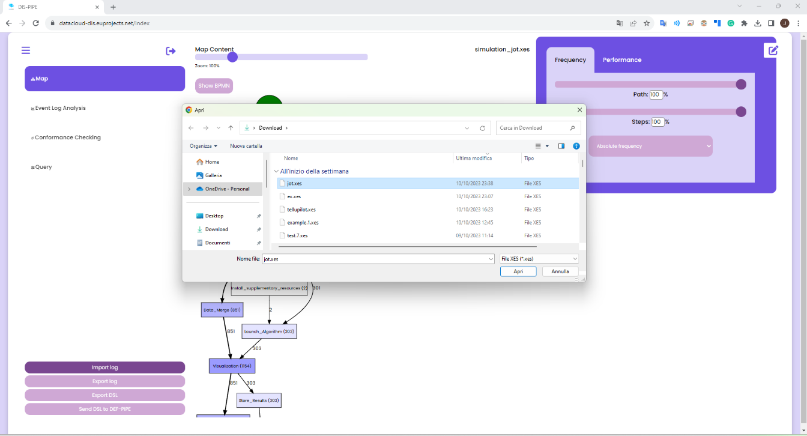DIS-PIPE Features
Below is the most recent overview of DIS-PIPE’s features, which include Event Abstraction, Segmentation and Trace Preprocessing, Dark Data Discovery and Exploitation, and Interface Functions.
Event Data Analysis: DIS-PIPE is able to analyse event data collected from various sources and related to a single (or multiple) data pipeline(s).
Interpretation of Partially Ordered Event Data: DIS-PIPE interprets event data that are recorded in a partially ordered way, i.e., without explicit timestamp associated with them or with a timestamp having a coarse granularity (e.g., days).
Low-frequency Trace Filtering: DIS-PIPE is able to recognise traces of event data with a low execution frequency and filter out them from the subsequent analysis.
Rule Filter: DIS-PIPE enable to specify complex rules in the form of ordering constraint between pipeline steps.
Event Logs Generation and Interpretation: DIS-PIPE is able to produce and interpret event logs formatted in XES, MXML, or CSV.
Big Data Pipeline Discovery: DIS-PIPE is able to discover big data pipelines starting from event logs formatted in XES, MXML, or CSV
Pipeline Expressiveness: DIS-PIPE is able to discover big data pipelines, including XOR, OR, AND, loops, and data association constructs.
Pipeline Visualisation and Description: DIS-PIPE allows users to have a visualisation and a description of the running pipelines.
Pipeline Analytics: DIS-PIPE computes analytics on the discovered pipelines.
Conformance Checking: DIS-PIPE performs conformance checking on the discovered pipelines and those developed in the past.
Anomaly Detection: DIS-PIPE interprets the compliance checking outcomes signalling nonconforming deviations and providing repair solutions
**Interface Functions: **Development of the missing interface functions to import a DSL pipeline from DEF-PIPE and to export an event log in XES format.
Dark Data Discovery and Exploitation: Development of a querying algorithm to extract information related to the dark data manipulated by the data pipeline.
Segmentation and Trace Preprocessing: Implementing and testing of the algorithm that performs segmentation and trace preprocessing.
Event Abstraction: Implementing and testing of the algorithm that performs event abstraction.
Integration with the Toolbox Components
DIS-PIPE interfaces with DEF-PIPE and data scientists using the following six functions
importLog(xesLogID) imports an event log in the XES format containing traces associated with one or more pipeline executions. DIS-PIPE uses this event log to feed the pre-processing and discovery components for learning the pipeline models underlying the behaviours observed in the log. The importLog function can be invoked by clicking a dedicated button in the Map view of the GUI.
exportLog(xesLogID) exports an input event log, previously pre-processed and interpreted by DIS-PIPE for performing model discovery in the XES format. Data scientists use this log to feed other process discovery tools available in the market, search for a different pipeline model, or perform diagnostics further than DIS-PIPE.
importPipeline(pipelineID) imports a pipeline represented in the DSL format, potentially modified by DEF-PIPE. DIS-PIPE analyses the model’s conformance compared to the actual event logs, detects misalignments between the observed behaviour stored in the log and the new expected behaviour, and suggests recovery or realignment strategies.
exportPipeline(pipelineID) exports a discovered pipeline model, converting it into DSL format (as returned by DEF-PIPE). Specifically, DEF-PIPE invokes the exportPipeline(pipelineID) interface provided by DIS-PIPE to load a discovered DSL pipeline model and enhance/customize its description using its visual workbench.
renamePipeline(pipelineID, newName) operation allows users to update the name of an existing pipeline. It’s useful for maintaining accurate records and categorizing pipelines within DIS-PIPE. The user parameter specifies the user initiating the operation, the pipelineID parameter identifies the ID of the specific pipeline to be renamed, and the newName parameter defines the desired new name for the pipeline.
getRepository() allows analyzing the DIS-PIPE repository where XES and DSL files are stored. A key-value map is returned, where the keys are the stored pipelines’ IDs, and the values are represented by their names.
DIS-PIPE with external tools, as Flask REST-APIs accessible via SwaggerUI, as shown below
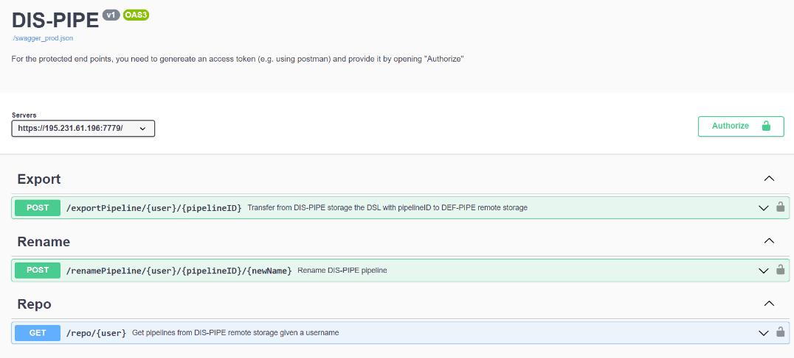Deployment, Code and Documentation Availability
Concerning DIS-PIPE code and documentation, the tool is available on GitHub at the following link: https://github.com/DataCloud-project/DIS-PIPE
DIS-PIPE is deployed on a single host accessible from the browser at following link: https://195.231.61.196:7778/ (or at https://datacloud-dis.euprojects.net/). The user’s browser first triggers an incoming request. Afterward, the backend of the tool, which is in charge to load the GUI and allow users to interact with its provided functionalities, manages and processes the user’s request.
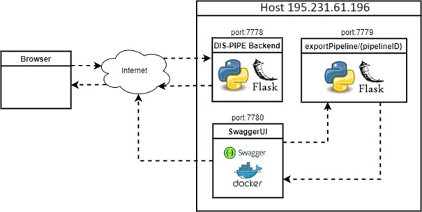Pipeline Definition
DEF-PIPE provides a visual design for domain experts to implement Big Data pipelines based on a DSL, including means to store and load the pipeline definitions. Furthermore, it enables data scientists to define the pipelines by configuring each step, injecting code, or customising predefined generic templates.
The DEF-PIPE Frontend is a graphic pipeline designer tool for defining Big Data pipelines and transforming them to DSL. The main part of the application is the interface for designing big data pipelines. This interface is implemented as a single page application using ReactJS. The popularity and stability of ReactJS make it potentially more friendly with developers to continue with the project later on. The project also uses Bootstrap, a CSS-framework providing basic UI-components building blocks, which are easy to customize.
The backend is implemented in C# using the DotNet (.NET) framework from Microsoft. In particular, ASP.NET Core, which is the part of the NET framework for web application, is being used. It implements a web API providing a central interface for operations such as managing pipelines and templates data, transforming pipelines into DSL.
Database of Pipeline Designer is used to model the steps and workflow of the pipeline. The model is persisted in JSON-format, and persisted in a MongoDB database. DEF-PIPE is integrated with Keycloak as single sign-on (SSO) solution. It offers user asset management for steps and pipelines, including the ability to expose them to other users publicly. The frontend includes improved support for parametrization of steps.
The architecture is displayed bellow.
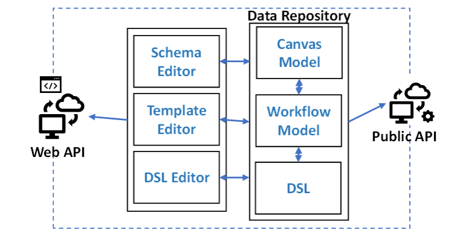Schema editor allows a graphical construction of the Big Data pipelines through drag-and-drop operations of the step descriptions stored in the template library.
Templates editor is a graphical component for describing pipeline steps through their parameters and resource requirements. A templates library stores the steps’ textual descriptions for subsequent pipeline design purposes.
DSL editor allows describing pipelines in a textual form. The templates library also stores the complete pipeline descriptions for further redesign and reuse.
Pipeline repository stores Big Data pipelines using their DSL representation.
Public API enables external interaction, including integration with the DIS-PIPE, SIM‑PIPE and ADA-PIPE tools.
Regarding pipeline representation, the tooling provides various improvements of the domain-specific language (DSL), including a grammar for specifying DSL models and implementation of editors (autocomplete + validation) in the Eclipse environment
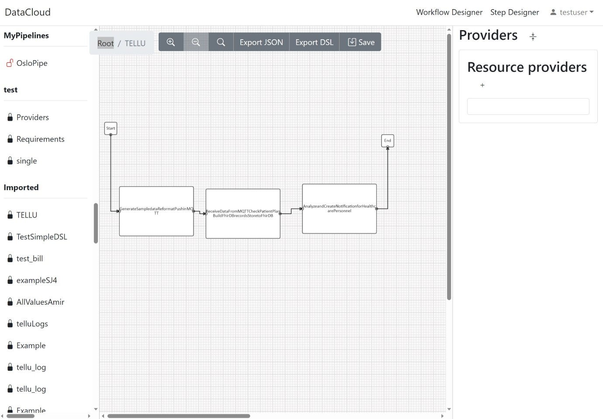To start working with the DEF-PIPE graphical tool, use the following link: https://crowdserv.sys.kth.se
A quick start guide is available on GitHub: https://github.com/DataCloud-project/DEF-PIPE-Frontend
DEF-PIPE Features
Below provided an overview of the features implemented and integrated with other tools:
Provide user-based management of pipelines
Support private and public pipelines
Integration with IAM for single sign-on
Improvements on the UI based on the feedback
Integration with more stable orchestrations
Integration with DEP-PIPE
Integration with SIM-PIPE
Integration with DIS-PIPE
Integration with ADA-PIPE
Integration with the Toolbox Components
Integration with other DataCloud components is done via implementing APIs. The APIs allow a DSL description of a discovered pipeline by the DIS-PIPE tool to be presented and edited in the graphical DEF-PIPE tool. DEP-PIPE and SIM-PIPE tools are already integrated and using the provided API to retrieve, edit, and delete a pipeline.
The API functionality within DEF-PIPE has been further improved. While the initial implementation allowed DSL descriptions to be retrieved based on the pipeline name, we have now enhanced this feature. The updated API now utilizes the pipeline’s unique ID to fetch the DSL definition, ensuring a more precise and efficient retrieval process.
The adjusted export pipeline in the DSL-API documentation can be seen below. As illustrated, the API takes the user and the pipeline’s unique id to return the DSL definition of pipeline.
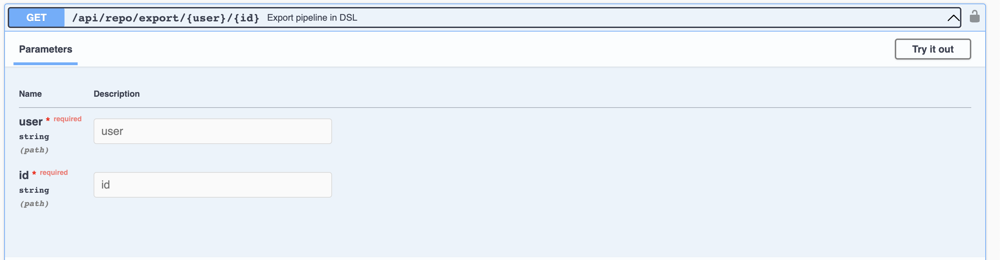Additionally, we announced the implementation of an API allowing users to retrieve their pipelines’ YAML file definitions. This feature complements the existing capabilities of DEF-PIPE, enabling users to access both DSL description and YAML file with ease. DEF-PIPE APIs are described at: https://crowdserv.sys.kth.se/docs
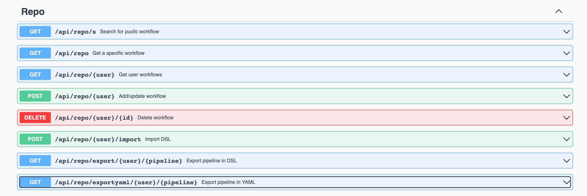Deployment, Code and Documentation Availability
DEF-PIPE is available on GitHub, along with dedicated instructions for usage https://github.com/DataCloud-project/DEF-PIPE-Frontend
The DEF-PIPE graphical tool is also deployed at https://crowdserv.sys.kth.se
Pipeline Simulation
SIM-PIPE simulates the pipeline execution and provides final deployment configurations that conform to the hardware requirements. SIM-PIPE also provides testing functionalities, such as a sandbox for evaluating the performance of individual pipeline steps and statistical analysis of the overall pipeline performance.
SIM-PIPE takes a pipeline’s definition as input and outputs runtime metrics, such as CPU usage, memory usage, energy consumption, run durations, and network bandwidth. SIM-PIPE can perform dry runs of pipelines by running small and brief versions of the pipelines in a sandbox. These dry runs improve the simulations’ accuracy for deployments at larger scales and assert whether one pipeline executes successfully.
SIM-PIPE consists of the following components: a web graphical user interface, a controller with an API, a relational time-series database, a simulation engine, and a sandbox to execute the dry runs.
The key innovation implemented in SIM-PIPE leverages the container-based approach for data pipelines and is related to the following aspects:
Novel means of leveraging container-based approach for data pipelines with sample data and different configurations to perform eventual simulations.
A dry run approach for generating inputs for simulators.
The SIM-PIPE user interface is shown below. A dry run’s pipeline steps are listed on the left screen, and logs from the run are displayed with interactive resource metrics plots on the right screen.
{kind=link}
{kind=link}
SIM-PIPE Features
SIM-PIPE provides the following high-level functionalities:
Deploying each step of a pipeline and running it in a sandbox by providing sample input.
Evaluating pipeline’s step performance by recording and analysing metrics about its execution to identify bottlenecks and steps to be optimised.
Identification of resource requirements for the pipeline by calculating step performance per resource used.
Proof of concept integration with KWOK1, which simulates a cluster of Kubernetes nodes, that allows testing your pipeline with different Kubernetes features, e.g., node types and capacities.
Below a summary of the features implemented and integrated with other tools.
GraphQL API
Authentication and authorisations
Dry run execution
Secure sandbox environment
Metrics collection
Integration of KWOK simulation engine
Integration with the Toolbox Components
SIM-PIPE provides a GraphQL API. GraphQL is a query language for APIs and a runtime for fulfilling those queries with your existing data. GraphQL provides a complete and understandable description of the data in your API, allows the clients to ask for exactly what they need, makes it easier to evolve APIs over time, and enables powerful developer tools. In addition to the integration with DEF-PIPE, SIM-PIPE dry run data is used by the scheduler of ADA-PIPE. The integration of ADA-PIPE and SIM-PIPE to enhance data pipeline scheduling is shown below.
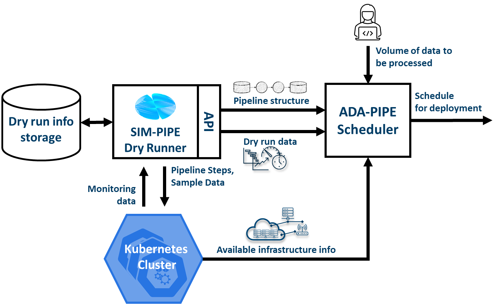Deployment, Code and Documentation Availability
The SIM-PIPE source code is available in a single GitHub repository: https://github.com/DataCloud-project/SIM-PIPE
It is released as open-source software under the Apache License 2.0.
The SIM-PIPE technical documentation, architecture description, deployment and installation guides, and user guides with examples, and contributing guide are also available in the GitHub repository. SIM-PIPE is used as a self-installed tool, that users can use. A public deployment is currently included as part of the DataCloud demo server (datacloud-toolbox.euprojects.net).
The API documentation is stored in the Git repository in HTML format is available at https://htmlpreview.github.io/?https://github.com/DataCloud-project/SIM-PIPE/blob/main/controller/public/index.html
Developers experienced with GraphQL can discover the API using any GraphQL tool, such as GraphiQL or Insomnia.
Pipeline Scheduling and Adaptation
ADA-PIPE provides a data-aware algorithm for optimised and adaptable scheduling on the Computing Continuum with infrastructure drift adaptation capability. ADA-PIPE allows to reconfigure the resource allocation to pipeline steps to fulfil the service level agreement between user’s and the resource providers.
ADA-PIPE Features
Here is an overview of the features implemented and integrated with other tools:
Scheduling tool implementation for QoS Guarantee for Tasks with Strict Deadlines and Data-Aware Pipeline Scheduling
Adaptation algorithm with support of Limited Dynamic Scheduling; Avoidance of Highly Utilized Resources;
Adaptation policies, Scheduling and scaling up/down the data pipeline executions;
Monitoring policies, Utilization of resources and pipeline chunks.
ADA-PIPE Architecture
The schema below illustrates the ADA-PIPE tool components related to the monitoring, followed by data preprocessing. Afterward, ADA-PIPE (re-)trains a k-means model on the pre-processed data to detect the anomalous execution of the pipeline’s steps and adapt the initial schedules.
In detail, to record the pipeline executions on the computing continuum, the Prometheus monitoring system imports the NetData metrics, such as processor and memory utilization, along with the network bandwidth usage and the runtime of pipeline steps. Moreover, ADA-PIPE requires to scrape the cAdvisor metric related to the pipeline steps.
In the second stage, ADA-PIPE preprocesses the monitoring data for the anomaly detection phase. The preprocessing phase creates a differenced, smoothed, and lagged data collection.
Afterward, ADA-PIPE trains an ML-based k-means model on the monitoring data. Furthermore, the model retrains on every time interval defined by the user in the presence of new data points (i.e., CPU, memory, and network usage).
Moreover, if a pipeline’s step requires more replicas or an event such as a device’s utilization occurs, the adaptation and scheduling component initiates reallocation.
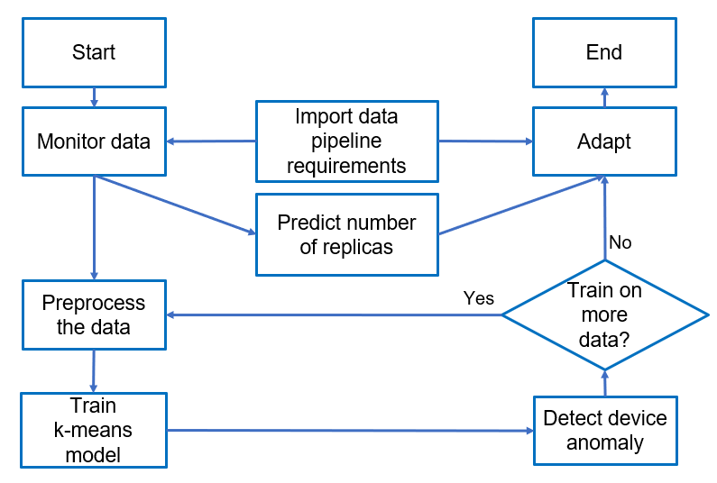Integration with the Toolbox Components
ADA-PIPE tool is running on a European Exoscale Cloud virtual machine accessible at the following IP address and domain name: http://194.182.187.139/ and https://datacloud-ada.euprojects.net/
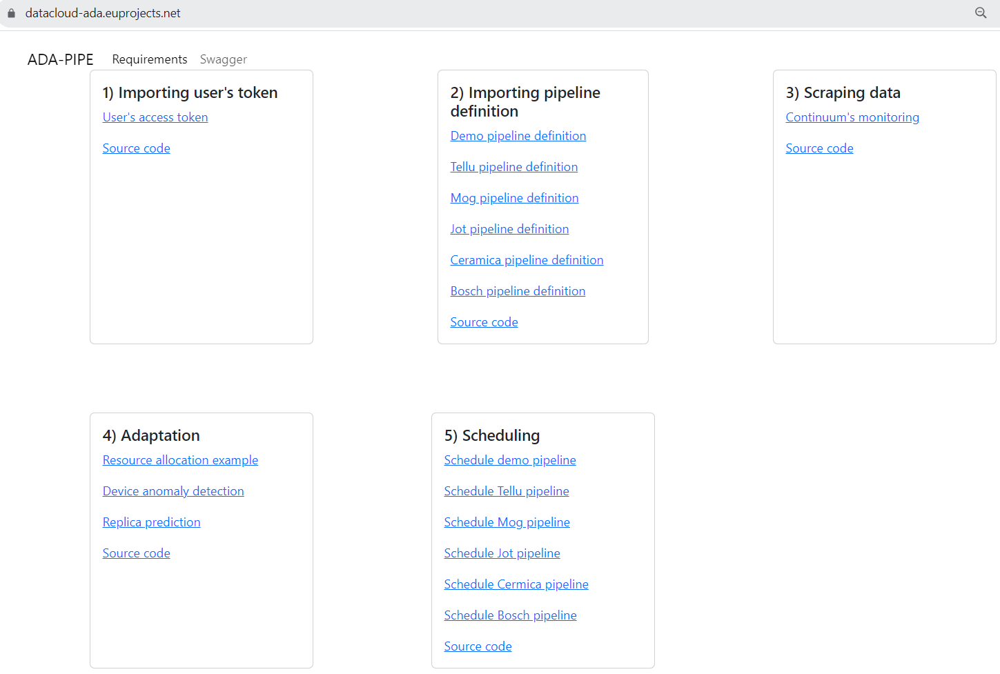Swagger UI and the API can be found in the following URL: http://194.182.187.13/swagger/
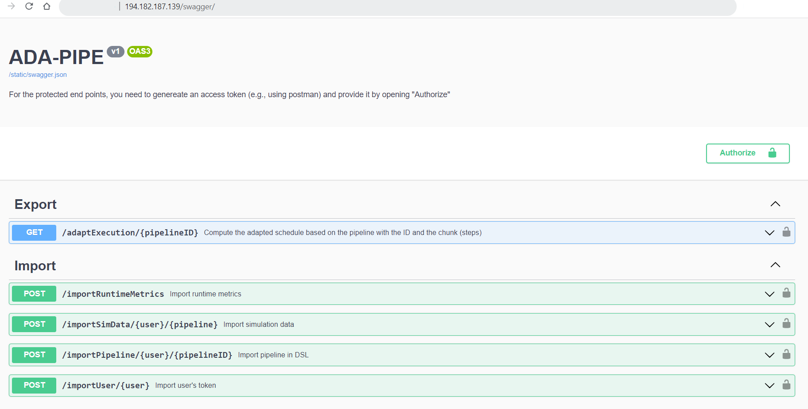Here shows that ADA-PIPE is able to receive the DSL definition of the user’s pipeline defined in DEF-PIPE tool. This information includes the quantitative hardware requirements for the pipeline steps that helps ADA-PIPE to match the pipeline’s steps to the devices with sufficient resources.
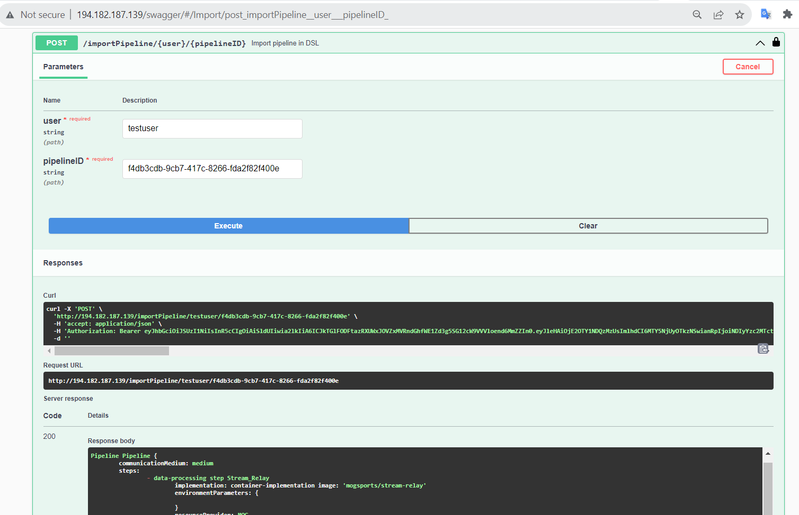Following receipt of the pipeline requirements, ADA-PIPE computes schedules based on device anomalies or the resource consumption of pipeline steps, and then modifies the pipeline’s execution on computing devices. Next, using the adaptExecution API, it exports the schedules to DEP-PIPE for deployment (see next image). The pipeline ID, which is obtained from the DEF-PIPE toolbox, is the primary argument supplied to the adaptExecution API.
Deployment, Code and Documentation Availability
Mainly, the source codes for the ADA-PIPE tool are available in the repository of https://github.com/DataCloud-project/ADA-PIPE. It is categorized based on the integrated C3 testbed into the DataCloud infrastructure, anomaly detection, frontend, matching-based scheduler, resource utilization and pipeline step’s replica predictions, and deployment’s update source codes available.
Specifically, the frontend source code is available in the repository https://github.com/DataCloud-project/ADA-PIPE/tree/main/frontend/.
ADA-PIPE used the Bootstrap features by following a video tutorial and a document on creating a simple web page using Bootstrap.
In addition, the tutorial on how to redirect the traffic from the default flask port number (i.e., 5000) to the http port number (i.e., 80) is provided. ADA-PIPE utilizes the Python flask microweb framework to provide the functionalities of the tool. This web page provides the documentation for the tool and allows the integrated DataCloud toolbox to communicate through the APIs such as importPipeline and adaptExecution.
ADA-PIPE receives and authorizes the user’s token, imports the domain-specific language-based model of the user’s pipeline through its ID, utilizes subprocess and JSON Python libraries, and then parses these descriptions to extract the requirements.
In addition, ADA-PIPE calculates the device anomalies based on the history data imported from the DEP-PIPE monitoring tool. Specifically, the anomaly detection component utilized the Netdata metrics collected through the Prometheus monitoring system accessible through the DEP-PIPE tool. Thereafter, ADA-PIPE utilizes the collected data of the running pipeline steps on the computing infrastructure to estimate and predict the number of replicas required by the pipeline steps by using a machine learning model (see details regarding the prediction model).
Afterward, ADA-PIPE provides a capacity-aware matching-based scheduler for data pipeline execution on the computing continuum. The base model of the matching-based scheduler requires the Python libraries: matching, networkx, operator, numpy, yaml, json.
ADA-PIPE currently supports to provide either the cost-optimized or time-optimized schedules. Therefore, it first analyses the requirements of each specific step. These includes processing speed, memory, storage sizes, the capabilities of the target deployment infrastructure, and the available resources in R-MARKET. Moreover, it receives the pipeline simulation from the SIM-PIPE tool, which provides the execution time along with the resource utilization of the pipeline’s execution on the computing infrastructure. Finally, ADA-PIPE relies on the Cloud virtual machine prices to estimate the user’s costs. Based on this analysis, ADA-PIPE creates an initial deployable schedule, which minimizes resource cost or time of execution of the pipeline
After analyzing the updates on the resource requirements of the pipeline steps, the integrated component adapts the pipeline execution. Hence, ADA-PIPE first pre-checks the updates through the horizontal pod scaling functionalities of Kubernetes. Its source code is available in the DataCloud public code repository. Thereafter, ADA-PIPE exports the required number of replicas of the executed pipeline steps through the scaling APIs of the DEP-PIPE.
Decentralized Resource Marketplace (R-MARKET)
R-MARKET deploys a decentralised hybrid permissioned and permissionless blockchain network that federates a vast set of heterogeneous resources from various providers across the Computing Continuum. R-MARKET creates a democratic marketplace of trustworthy resources and enables transparent provisioning over multiple control and network domains for external use.
R-MARKET Features
Here is provide an overview of the features implemented and integrated with other tools.
R-MARKET UI and API have been developed for hiding the Blockchain complexity
Addition of Edge Server to Marketplace
Support longer running task (Service-Task)
Addition of user flexibility for contract management (extension/interruption)
Addition of user awareness of a worker’s
connection status when reserved (heartbeat system)
Support ADA-PIPE hardware requirements in R-MARKET
Automatically connection of reserved worker to DEP-PIPE
Possibility for anyone to connect as a worker
Possibility for providers to specify a maximum total duration for resource usage
Expansion of resource stack to include various resource types (e.g., GPU accelerated VMs)
Implementation of smart contracts that act as proxies, automating payments for whitelisted wallets authorized to do so.
Integration with the Toolbox Components
R-MARKET is a composite tool, developed by getting the inspiration from the iExec Marketplace.All the related component of the R-MARKET are listed and available to the GitHub repository (https://github.com/DataCloud-project/R-MARKET). The main entry point of the R-MARKET tool is the R-MARKET UI (https://github.com/DataCloud-project/R_MARKET_UI), which is a React.JS UI (Figure 28 and Figure 29) and it helps ease the interaction between other tools and R-MARKET component by hiding the complexity of Blockchain technology. This UI is deployed on the Microsoft Azure provisioned VM and available at: https://r-market.westeurope.cloudapp.azure.com:5555/.
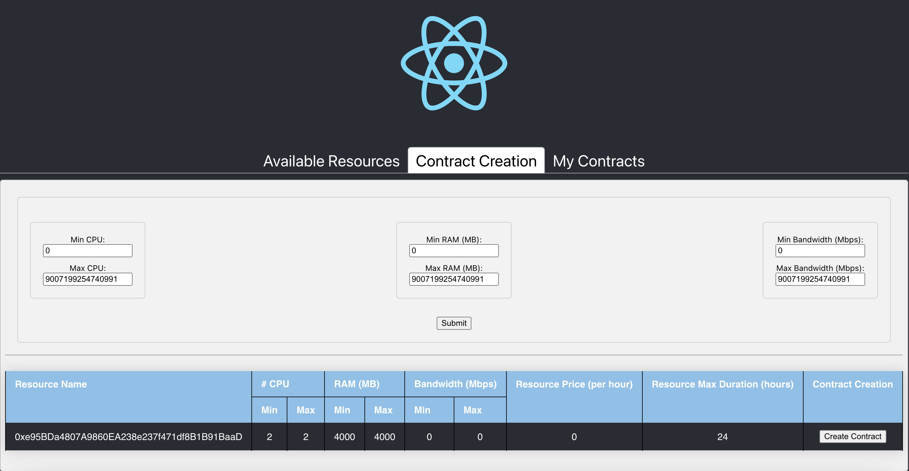 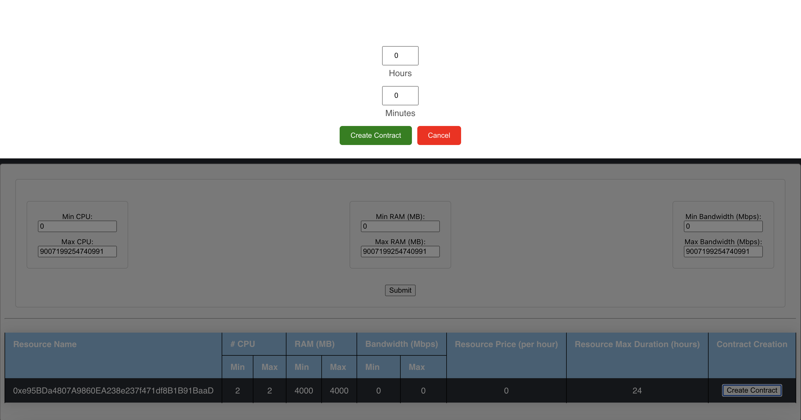For authenticating the R-MARKET UI interactions, the MetaMask plugin is used and its integration is with the R-MARKET Node.JS API server and the R-MARKET back-end.
The R-MARKET API stands as the central communication hub within the R-MARKET ecosystem, serving as the conduit through which a wide array of functions and operations are executed. Its pivotal role lies in empowering the R-MARKET UI by granting it the capability to access, interact with, and oversee the functionalities of the decentralized marketplace. The synergy between the R-MARKET API and R-MARKET UI is mutually beneficial, with the API being responsible for executing the commands and actions initiated by users through the user interface. It operates as the responsive server that handles specific functions for the R-MARKET UI, effectively coordinating tasks such as resource provisioning, reservation, and transaction with precision and efficiency. R-MARKET API serves as a vital link, connecting users to the MetaMask decentralized marketplace. It ensures that users’ requests and commands seamlessly translate into actionable operations, ultimately fostering a marketplace experience that is both user-friendly and highly efficient.
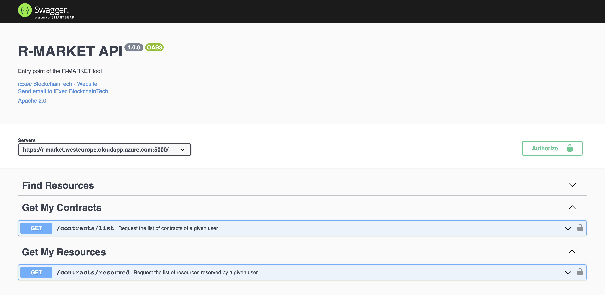Besides the R-MARKET UI and API, we have already deployed the All-in-One Blockchain node over the Microsoft Azure provisioned VM, for permanently keeping the deal information and transactions into the Blockchain. In addition, we have already deployed a workerpool, along with scheduler and workers, over a Microsoft Azure provisioned VM. The details of this workerpool are available to the following link: Workerpool 1: http://r-market.westeurope.cloudapp.azure.com:30000/
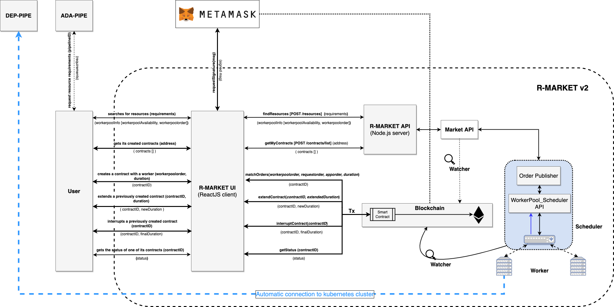ADA-PIPE, DEP-PIPE and R-MARKET collectively constitute the Run-Time bundle. This bundle serves as the foundation for scheduling and provisioning Computing Continuum resources to facilitate the deployment of Big Data pipelines.
A visual depiction of these components’ integration into the run-time bundle can be seen above. This integration modification improves resource allocation, guaranteeing a more effective Big Data pipeline deployment procedure.
The user interfaces for the R-MARKET UI are depicted in the schema below.
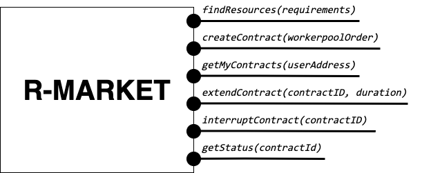Deployment, Code and Documentation Availability
In the main GitHub repository of the R-MARKET (https://github.com/DataCloud-project/R-MARKET), all the corresponding repositories for R-MARKET tool has been documented. Notably, R-MARKET has seven different repositories for the various R-MARKET components (e.g., UI, Node.JS Server, Market-API, Scheduler, Worker, etc.) followed by one repository for R-MARKET SDK. The source code and user-instruction/guidelines for each individual tool can be found in the corresponding repository.
For showcasing the workerpool details, the dashboard for workerpool is accessible to the following link: http://r-market.westeurope.cloudapp.azure.com:30000/.
An overview of the current testbed, where we have implemented the R-MARKET components, is given in this schema. The Microsoft Azure platform serves as the host for this testbed. We have implemented a single workerpool in this setup, which is managed by a scheduler. We currently have our configuration maintaining a primary workerpool with at least three workers that are always connected. Furthermore, we have worker nodes that have been provided by our partners and are periodically available for task execution. We intend to extend the testbed further as part of our ongoing expansion efforts by deploying more workerpools that will integrate a wider range of resources from our partner organizations.
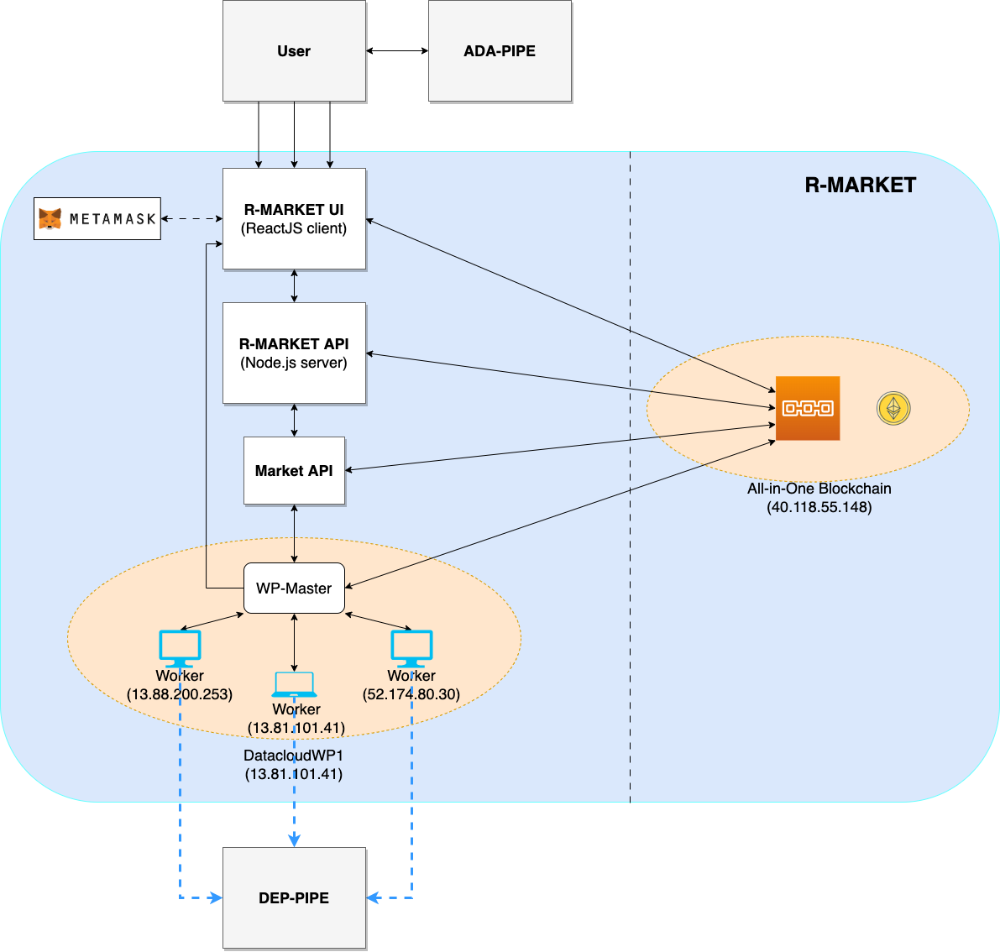Pipeline Deployment & Management
DEP-PIPE enables flexible and scalable deployment and orchestration of Big Data pipelines over the Computing Continuum resources. DEP-PIPE monitors the pipeline execution and provides online SLO metrics to the other tools.
DEP-PIPE has been built to support a framework agnostic approach on top of OS-level virtualisation (containerization) techniques to allow the deployment of pipelines developed through different data analytics tools. DEP-PIPE uses resources available in cloud and edge, and also resources provided by the R-MARKET and deals with the challenges of efficient deployment and orchestration of services deployed across the computing continuum; existing state-of-the-art approaches consider the edge and the cloud devices in isolation; therefore, the main challenge is the unification of cloud, fog, and edge resources for both the deployment and orchestration of distributed applications.
With DEP-PIPE, the MAESTRO software platform from UBITECH and the Kubernetes orchestration concepts have been extended to make them suitable for the deployment of multi-step pipelines to edge and fog environments. This leads to the development of new orchestration ideas, including workflow orchestration, for highly distributed applications.
DEP-PIPE Features
Here is n overview of the features implemented and integrated with other tools.
Graphical user interface provided
Initialization of a deployment from the UI
R-MARKET resources usage
Deployment of pipelines using containerized steps
Deployment based on the descriptors provided by ADA-PIPE
Reception of resource configurations from R-MARKET through the ADA-PIPE descriptor
Multi-cloud support
Security policies enforcement
Scale cluster
Pre-deployment configuration
Adaptation based on pipeline chunks from ADA-PIPE
Vulnerabilities scanning
Integration with the Toolbox Components
To perform deployment in DEP-PIPE, DEF-PIPE provides a list of pipelines per user. Once the user selects the pipeline, ADA-PIPE provides DEP-PIPE with the pipeline chunk to deploy, and a description of the resources allocated to it. On the image below can be seen how ADA-PIPE integrates with DEP-PIPE with the API.
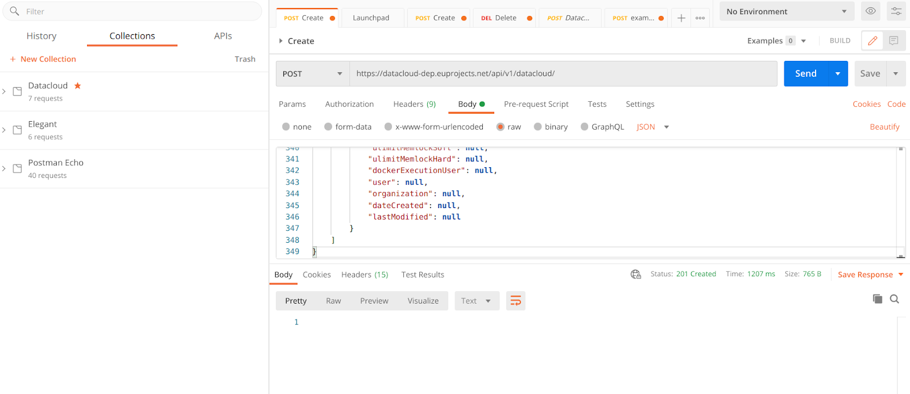The JSON for this call is provided below, and based on the Json schema of the DEP-PIPE descriptor
{
"pipelineName": "Heathcare_pipeline",
"pipelineType": "simulation|production",
"stepName": "readMedicValues",
"terminationCheck": {
"httpURL": "localhost/api/v1/success"
},
"time": {
"EST": 0.0,
"EFT": 2.92
},
"jobListjob": [{
"order": 1,
"name": "readMedicValues",
"resource": "datacloud_worker_1_wp1",
"provider":"R-MARKET",
"architecture": "amd64",
"elasticityControllerMode": "HORIZONTAL",
"dockerImage": "xx/xxx:1.0",
"dockerCredentialsUsing": "false",
"dockerUsername": "",
"dockerPassword": "",
"dockerCustomRegistry": "true",
"dockerRegistry": "",
"requirement": {
"vCPUs": 4,
"ram": 4,
"storage": 20
},
"healthCheck": {
"httpURL": "localhost/api/v1/healthCheck",
"args": "ps -e | grep java",
"interval": 20
},
"terminationCheck": {
"httpURL": "localhost/api/v1/success",
"args": "ps -e | grep java"
},
"command": "-->Container Excecution<--",
"environmentalVariables": [{
"key": "",
"value": ""
}],
"numWorkers": 5,
"exposedInterfaces": [{
"name": "sparkMasterRest",
"port": "8000",
"interfaceType": "Core",
"transmissionProtocol": "TCP"
}],
"requiredInterfaces": [{
"friendlyNamename": "sparkMasterRest"
}],
"plugin": [{
"name": ""
}],
"devices": [{
"key": "/dev/gpu0",
"value": "/dev/gpu0"
}],
"volumes": "!!!pending!!!",
"labels": [{
"name": ""
}],
"hostname": "-->Advanced Options<--",
"capabilityDrops": [{
"name": ""
}],
"capabilityAdds": [{
"name": ""
}],
"ulimitMemlockSoft": "",
"ulimitMemlockHard": "",
"networkModeHost": "true",
"privilege": "false",
"publicComponet": true,
"dockerExecutionUser":""
}]
}
Deployment, Code and Documentation Availability
DEP-PIPE is currently split in four different repositories that are available in GitHub, and also uses MAESTRO that is hosted in UBITECH’s private registry.
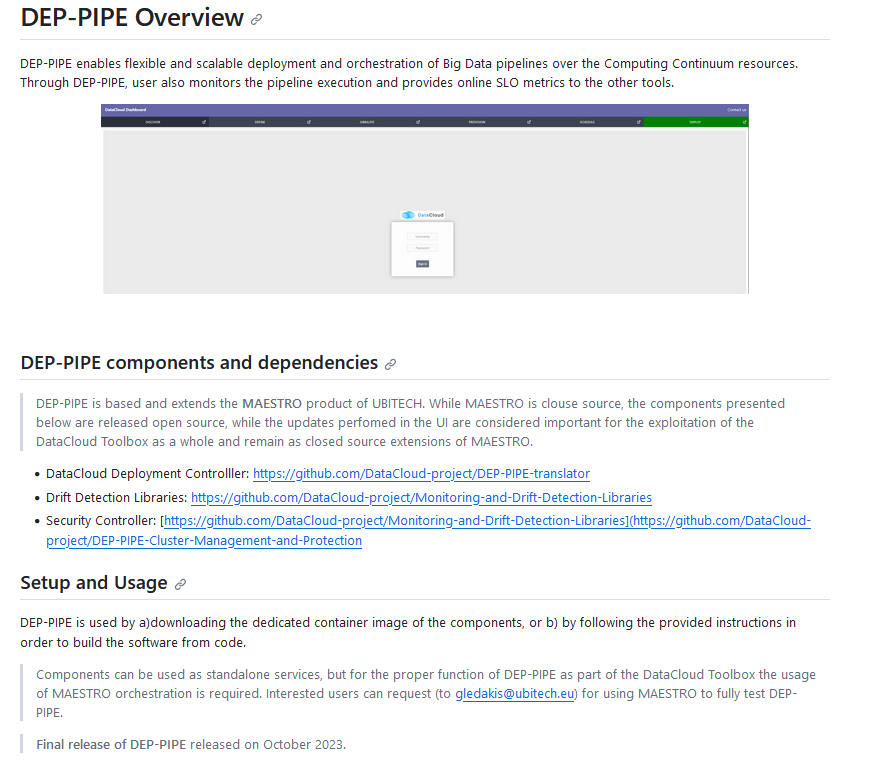The main repository contains instructions for the DEP-PIPE setup (including MAESTRO tool setup instructions) in the main repository.
The DataCloud Deployment controller provides the main functionalities that allow the deployment of DataCloud pipelines, by transforming the ADA-PIPE provided JSON and create the needed steps (creation of dedicated containerized services) for the deployment through DataCloud. DataCloud Security Controller provides the backend services for the security functionalities (vulnerabilities scanning, access control). Finally, the monitoring service (that consists of a Monitoring collector, Prometheus and a service providing REST API) and data-drift libraries are provide in the dedicated repo. DEP-PIPE has been deployed online and is accessible through the https://datacloud-dep.euprojects.net domain and is also part of the toolbox demo page (https://datacloud-toolbox.euprojects.net/#/deploy).
Runtime Dashboard and Common DataCLoud UI
In addition of providing standalone services, we also decided that it would be beneficial for the overall user experience of DataCloud to provide a common view that aggregates the functionalities of all tools. Initially, this led to the design of mock-ups, allowing such basic functionality. In the first release, we proceeded with the creation of a common page that delivered the first PoC of the Toolbox, and since then, it has been used for accessing the tools deployed for demonstration and testing purposes. The UI of the toolbox is accessible at https://datacloud-toolbox.euprojects.net.
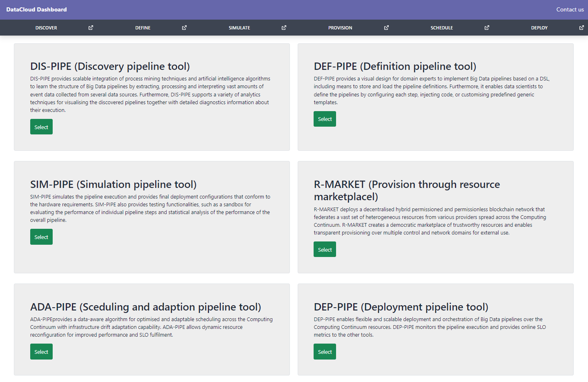 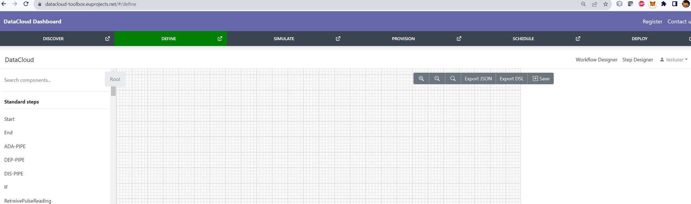The code for this common UI is available at: https://github.com/DataCloud-project/ALL-PIPE. For the final release, we tried to simplify further the user experience, by integrating the tools further as part of the Runtime Dashboard. For this purpose, the database and the Apache Kafka message bus of DEP-PIPE have been used for any asynchronous communication of the components needed. This is considered especially in a platform where some actions can take a long time to be executed (e.g., data uploading or data anonymization), and asynchronous calls allow us to provide the user with a smoother user experience.
Common Identity Management
DataCloud supports a workflow that targets multiple users, that can have different background, such as data scientist and DataOps or business experts. For this purpose, we understand the importance of role management as part of an integrated platform as the various toolbox services might be targeting different users within an organization. Therefore, in DataCloud we use an Identity and Access Management (IAM) that support multiple user roles and we offer the possibility to create organisations that include multiple users (as part of the runtime management).
Keycloak Integration
For DataCloud, Keycloak, an open-source solution, that has been deployed for the scope of the project
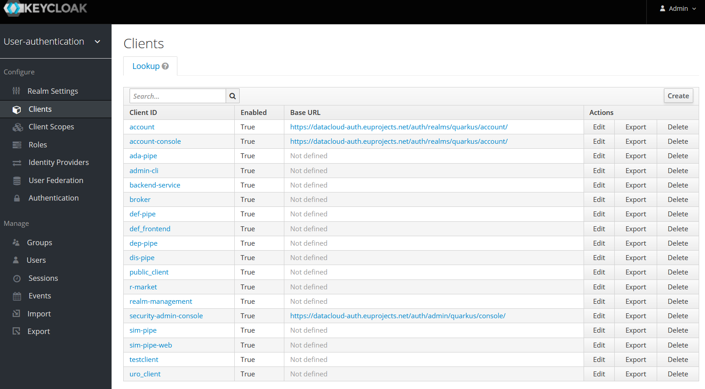Through configured realms and clients, Keycloak can centralize the login process of various systems and components through the implementation of protocols such as OAuth2.01 and OpenID Connect (a.k.a. OIDC)2. DataCloud tools integrated Keycloak, which for the public DataCloud toolbox, is deployed at https://datacloud-auth.euprojects.net/, and thus, the toolbox features secure communication among the tools and proper Identity Management.
Below is an overview of the single sign-on integration inf DataCloud, covering front and back-end services.
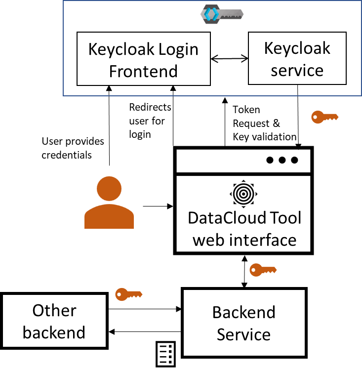A user loading the web interface of a tools is prompted to log in (unless they have a valid session already). Once the user enters their credentials, they receive a secure token that enables them to access the application. In addition, if a service requests an asset from another DataCloud service (e.g., results of a simulation run is requested by the adaptation engine), it needs to provide a valid user token for the specific asset as part of the API call. The specific way that the userID will be provided has been agreed (based om the Keycloak tokens), while each service is responsible for storing this userID locally so that can find the appropriate user resources (e.g., the defined pipelines, simulations or deployments).
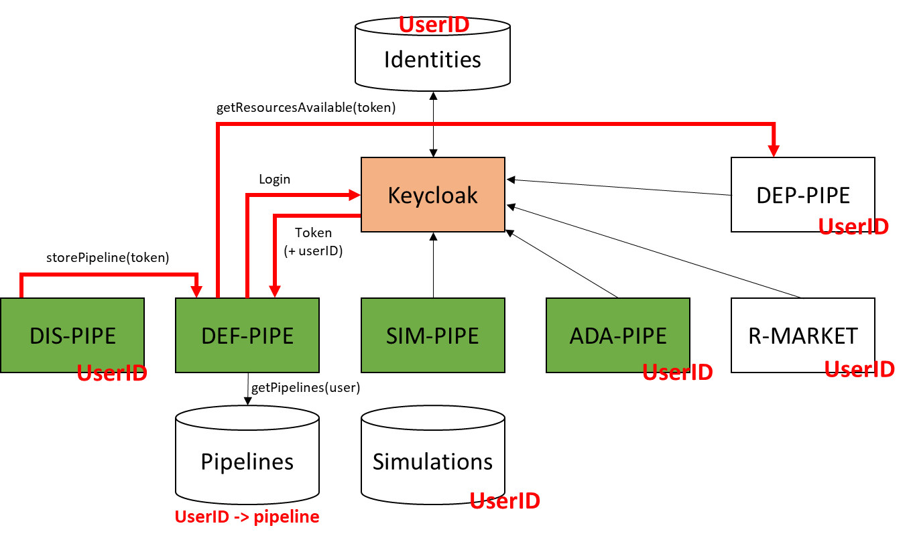Finally, from the user perspective, a common login and registration page has been created for the new users, as depicted in the following screens: